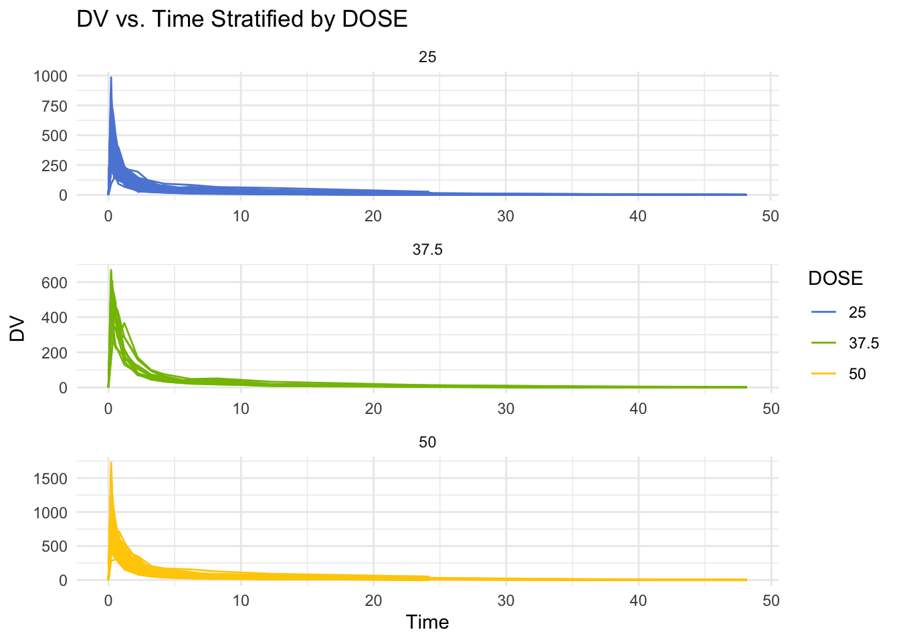
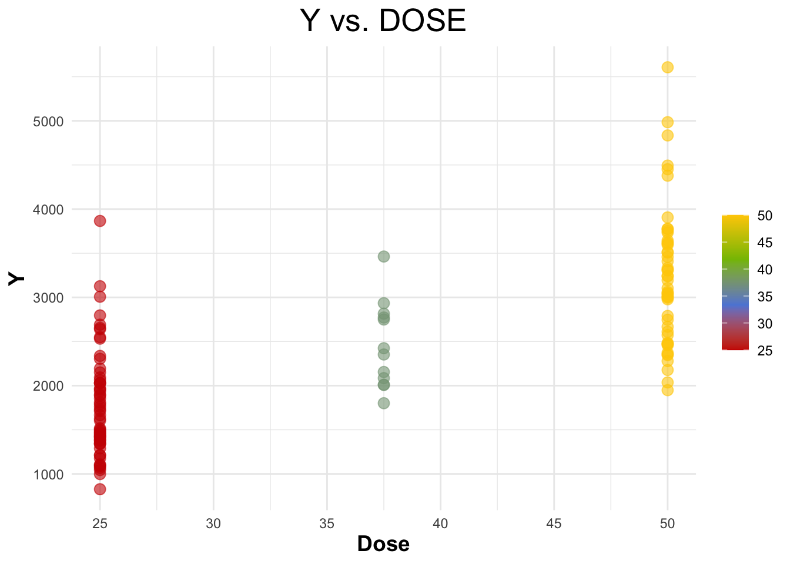
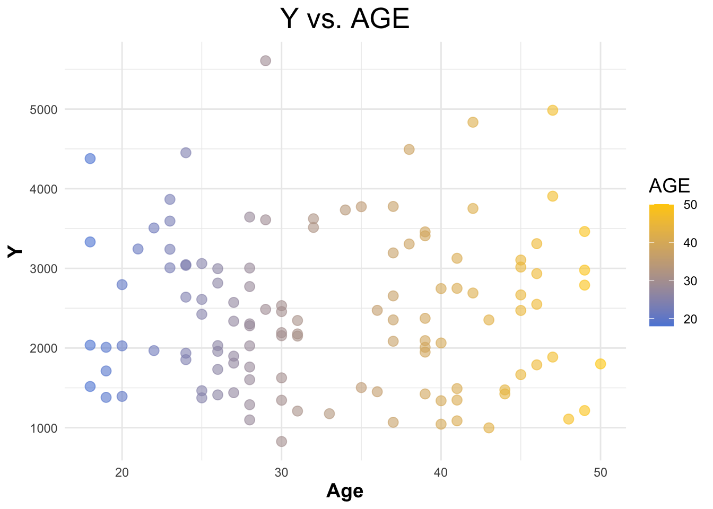
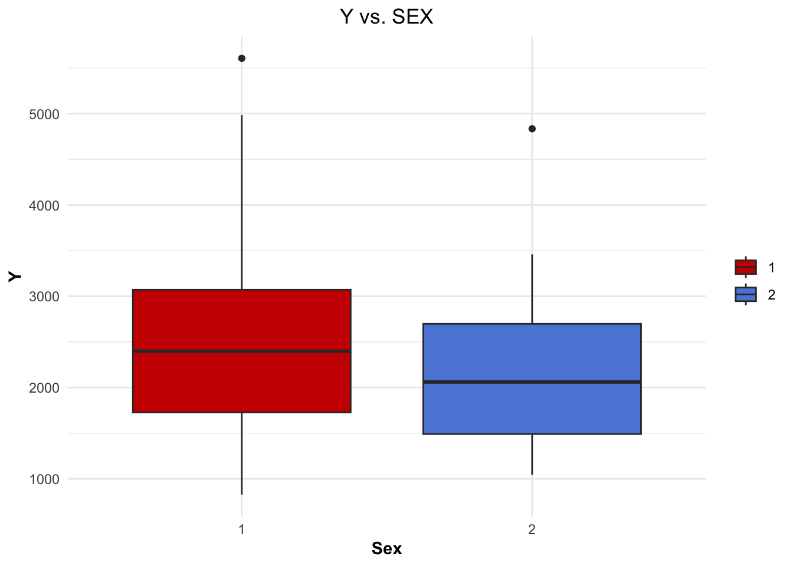
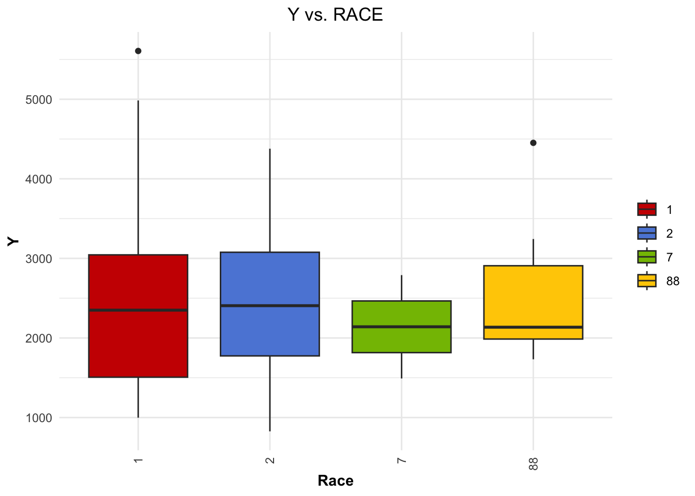
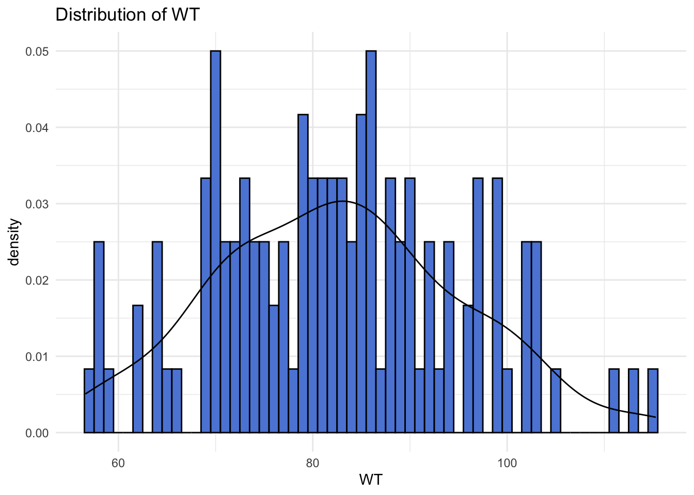
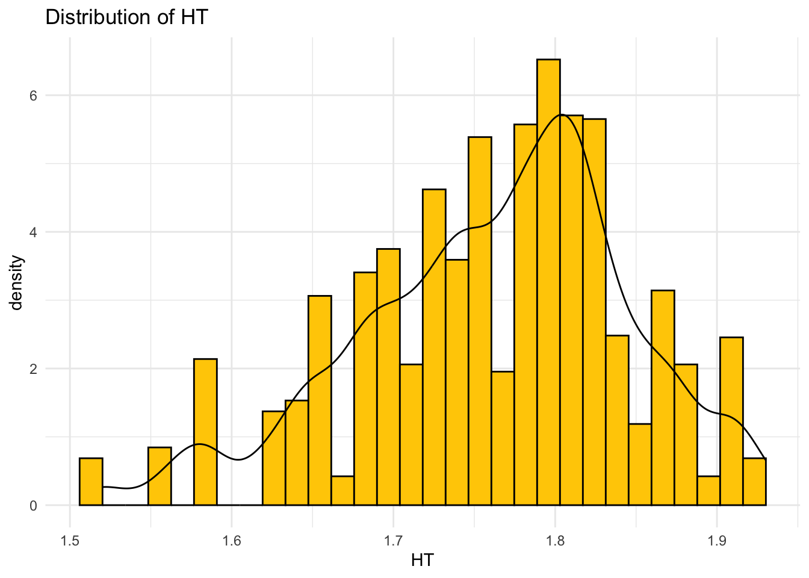

# Load here and readr for data reading
library(here)
library(readr)Fitting Exercise
Importing Data
The first step was to import and read the data from the csv file.
First, the required libraries ‘here’ and ‘readr’ were loaded.
Next, the data was read from the csv file.
# Use the here function to specify the file path
data_path <- here("/Users/lizahall/Desktop/School/Spring 2024/Applied Data Analysis/GitHub/lizahall-MADA-portfolio/fitting-exercise/Mavoglurant_A2121_nmpk.csv")
# Load the data
data <- read_csv(data_path)
Printing the first few rows of the dataset, to make sure it loaded correctly.
# Inspect the first few rows of the data to ensure it's loaded correctly
head(data)# A tibble: 6 × 17
ID CMT EVID EVI2 MDV DV LNDV AMT TIME DOSE OCC RATE AGE
<dbl> <dbl> <dbl> <dbl> <dbl> <dbl> <dbl> <dbl> <dbl> <dbl> <dbl> <dbl> <dbl>
1 793 1 1 1 1 0 0 25 0 25 1 75 42
2 793 2 0 0 0 491 6.20 0 0.2 25 1 0 42
3 793 2 0 0 0 605 6.40 0 0.25 25 1 0 42
4 793 2 0 0 0 556 6.32 0 0.367 25 1 0 42
5 793 2 0 0 0 310 5.74 0 0.533 25 1 0 42
6 793 2 0 0 0 237 5.47 0 0.7 25 1 0 42
# ℹ 4 more variables: SEX <dbl>, RACE <dbl>, WT <dbl>, HT <dbl>
Loading in ggplot2 for plotting.
Plotting ‘DV’ as a function of time, stratified by ‘DOSE’ with ‘ID’ as a grouping factor. This provides a quick visual overview of the data.
# Load ggplot2 for plotting
library(ggplot2)
# Define colors
colors <- c("#5c88da", "#84bd00", "#ffcd00")
ggplot(data, aes(x = TIME, y = DV, group = ID, color = as.factor(DOSE))) +
geom_line() +
scale_color_manual(values = colors) +
facet_wrap(~ DOSE, scales = "free", ncol = 1) +
labs(title = "DV vs. Time Stratified by DOSE", x = "Time", y = "DV", color = "DOSE") +
theme_minimal()
Data Processing
Loading in dplyr for data manipulation.
# Load dplyr for data malipulation
library(dplyr)
First, data is filtered to keep only rows where ‘OOC’ is equal to 1.
Then the first few rows of the dataframe are printed, to ensure that the data was filtered correctly.
# Filter the DataFrame to keep only rows where OCC equals 1
data1 <- subset(data, OCC == 1)
# Print the first few lines of the filtered dataframe
print(head(data1))# A tibble: 6 × 17
ID CMT EVID EVI2 MDV DV LNDV AMT TIME DOSE OCC RATE AGE
<dbl> <dbl> <dbl> <dbl> <dbl> <dbl> <dbl> <dbl> <dbl> <dbl> <dbl> <dbl> <dbl>
1 793 1 1 1 1 0 0 25 0 25 1 75 42
2 793 2 0 0 0 491 6.20 0 0.2 25 1 0 42
3 793 2 0 0 0 605 6.40 0 0.25 25 1 0 42
4 793 2 0 0 0 556 6.32 0 0.367 25 1 0 42
5 793 2 0 0 0 310 5.74 0 0.533 25 1 0 42
6 793 2 0 0 0 237 5.47 0 0.7 25 1 0 42
# ℹ 4 more variables: SEX <dbl>, RACE <dbl>, WT <dbl>, HT <dbl>
Next, any observations where ‘TIME’ equals 0 are filtered out.
Then the sum of the DV variables are computed and assigned to variable Y.
Then a dataframe is created, which only contains observations where ‘TIME’ equals 0.
Finally, ‘inner_join’ is used to combine the dataframes.
# Filter out observations where TIME is not equal to 0
data_filtered <- filter(data1, TIME != 0)
# Compute the sum of the DV variable for each individual
Y <- data_filtered %>%
group_by(ID) %>%
summarize(Y = sum(DV))
# Create a dataframe containing only the observations where TIME equals 0
data_TIME_0 <- filter(data1, TIME == 0)
# Combine the two dataframes using the appropriate join function
combined_data <- inner_join(Y, data_TIME_0, by = "ID")
Next, ‘RACE’ and ‘SEX’ are converted to factor variables.
Then variables ‘Y’, ‘DOSE’, ‘AGE’, ‘SEX’, ‘RACE’, ‘WT’, and ‘HT’ are assigned to selected_data.
# Convert RACE and SEX to factor variables
combined_data <- combined_data %>%
mutate(RACE = factor(RACE),
SEX = factor(SEX))
# Select only the desired variables
selected_data <- combined_data %>%
select(Y, DOSE, AGE, SEX, RACE, WT, HT)
Exploratory Data Analysis
Loading in packages for data exploration and visualization.
# Load tidyr, knitr, ggsci, and corrplot for data exploration and visualization
library(tidyr)
library(knitr)
library(ggsci)
library(corrplot)
To get a better idea of the variables, summary table is printed.
# Summary table for all variables
summary_data <- summary(selected_data[, c("Y", "DOSE", "AGE", "SEX", "RACE", "WT", "HT")])
print(summary_data) Y DOSE AGE SEX RACE
Min. : 826.4 Min. :25.00 Min. :18.00 1:104 1 :74
1st Qu.:1700.5 1st Qu.:25.00 1st Qu.:26.00 2: 16 2 :36
Median :2349.1 Median :37.50 Median :31.00 7 : 2
Mean :2445.4 Mean :36.46 Mean :33.00 88: 8
3rd Qu.:3050.2 3rd Qu.:50.00 3rd Qu.:40.25
Max. :5606.6 Max. :50.00 Max. :50.00
WT HT
Min. : 56.60 Min. :1.520
1st Qu.: 73.17 1st Qu.:1.700
Median : 82.10 Median :1.770
Mean : 82.55 Mean :1.759
3rd Qu.: 90.10 3rd Qu.:1.813
Max. :115.30 Max. :1.930
Creating a scatterplot for ‘Y’ vs ‘DOSE’.
# Define colors
colors <- c("#cc1c00", "#5c88da", "#84bd00", "#ffcd00")
# Create the scatterplot of Y vs. DOSE
ggplot(selected_data, aes(x = DOSE, y = Y)) +
geom_point(aes(color = DOSE), alpha = 0.6, size = 3) +
scale_color_gradientn(colors = colors) +
labs(title = "Y vs. DOSE", x = "Dose", y = "Y") +
theme_minimal() +
theme(plot.title = element_text(hjust = 0.5, size = 20),
axis.title.x = element_text(face="bold", size = 14),
axis.title.y = element_text(face="bold", size = 14),
legend.title = element_blank())
Creating a scatterplot for ‘Y’ vs ‘AGE’.
# Scatterplot of Y vs. AGE
ggplot(selected_data, aes(x = AGE, y = Y)) +
geom_point(aes(color = AGE), alpha = 0.6, size = 3) +
scale_color_gradient(low = "#5c88da", high = "#ffcd00") +
labs(title = "Y vs. AGE", x = "Age", y = "Y") +
theme_minimal() +
theme(plot.title = element_text(hjust = 0.5, size = 20),
axis.title.x = element_text(face="bold", size = 14),
axis.title.y = element_text(face="bold", size = 14),
legend.title = element_text(size = 14))
Creating a boxplot for ‘Y’ vs ‘SEX’.
# Boxplot of Y vs. SEX
ggplot(selected_data, aes(x = as.factor(SEX), y = Y, fill = as.factor(SEX))) +
geom_boxplot() +
scale_fill_startrek() +
labs(title = "Y vs. SEX", x = "Sex", y = "Y") +
theme_minimal() +
theme(legend.title = element_blank(),
plot.title = element_text(hjust = 0.5),
axis.title.x = element_text(face="bold"),
axis.title.y = element_text(face="bold"))
Creating a boxplot for ‘Y’ vs ‘RACE’.
# Boxplot of Y vs. RACE
ggplot(selected_data, aes(x = as.factor(RACE), y = Y, fill = as.factor(RACE))) +
geom_boxplot() +
scale_fill_startrek() +
labs(title = "Y vs. RACE", x = "Race", y = "Y") +
theme_minimal() +
theme(legend.title = element_blank(),
plot.title = element_text(hjust = 0.5),
axis.text.x = element_text(angle = 90, vjust = 0.5, hjust=1),
axis.title.x = element_text(face="bold"),
axis.title.y = element_text(face="bold"))
Creating distribution curves for ‘WT’ and ‘HT’.
# Distribution of WT with density curve
ggplot(selected_data, aes(x = WT)) +
geom_histogram(aes(y = ..density..), binwidth = 1, fill = "#5c88da", color = "black") +
geom_density(alpha = 0.5, color = "black") +
theme_minimal() +
ggtitle("Distribution of WT")Warning: The dot-dot notation (`..density..`) was deprecated in ggplot2 3.4.0.
ℹ Please use `after_stat(density)` instead.
# Distribution of HT with density curve
ggplot(data, aes(x = HT)) +
geom_histogram(aes(y = ..density..), fill = "#ffcd00", color = "black") +
geom_density(alpha = 0.5, color = "black") +
theme_minimal() +
ggtitle("Distribution of HT")
Plotting correlation matrix.
# Convert variables_of_interest to numeric
variables_of_interest <- as.data.frame(sapply(selected_data, as.numeric))
# Calculate correlation matrix for the variables of interest
corr_matrix <- cor(variables_of_interest, use = "complete.obs")
# Your custom colors
my_colors <- colorRampPalette(c("#5c88da", "white", "#ffcd00"))(200)
# Plotting the correlation matrix with custom colors
corrplot(corr_matrix, method = "color", col = my_colors,
tl.col="black", tl.srt=45) # Text label color and rotation
Model Fitting
Loading in tidymodels for model fitting.
# Load tidymodels for model fitting
library(tidymodels)
Linear Models
Models were fitted to the continuous outcome ‘Y’.
Defining the linear model specification.
# Define the model specification
linear_spec <- linear_reg() %>%
set_engine("lm") %>%
set_mode("regression")
Fitting model with ‘DOSE’ as the predictor.
# Model with DOSE as predictor
# Fit the model
model_dose <- linear_spec %>%
fit(Y ~ DOSE, data = selected_data)
# Summarize the model
summary(model_dose$fit)
Call:
stats::lm(formula = Y ~ DOSE, data = data)
Residuals:
Min 1Q Median 3Q Max
-1284.91 -441.14 -97.22 325.84 2372.87
Coefficients:
Estimate Std. Error t value Pr(>|t|)
(Intercept) 323.062 199.049 1.623 0.107
DOSE 58.213 5.194 11.208 <2e-16 ***
---
Signif. codes: 0 '***' 0.001 '**' 0.01 '*' 0.05 '.' 0.1 ' ' 1
Residual standard error: 672.1 on 118 degrees of freedom
Multiple R-squared: 0.5156, Adjusted R-squared: 0.5115
F-statistic: 125.6 on 1 and 118 DF, p-value: < 2.2e-16
Calculating RMSE and R-squared for ‘DOSE’ model.
# RMSE and R-squared for model with DOSE
rmse_dose <- model_dose %>%
predict(new_data = selected_data) %>%
bind_cols(selected_data) %>%
metrics(truth = Y, estimate = .pred) %>%
filter(.metric %in% c("rmse", "rsq"))
print(rmse_dose)# A tibble: 2 × 3
.metric .estimator .estimate
<chr> <chr> <dbl>
1 rmse standard 666.
2 rsq standard 0.516
Fitting model with all predictors.
# Model with all predictors
# Fit the model
model_all <- linear_spec %>%
fit(Y ~ ., data = selected_data)
# Summarize the model
summary(model_all$fit)
Call:
stats::lm(formula = Y ~ ., data = data)
Residuals:
Min 1Q Median 3Q Max
-1480.86 -367.81 -79.95 266.15 2431.52
Coefficients:
Estimate Std. Error t value Pr(>|t|)
(Intercept) 3386.863 1835.153 1.846 0.067623 .
DOSE 59.935 4.880 12.281 < 2e-16 ***
AGE 3.155 7.825 0.403 0.687530
SEX2 -357.734 216.928 -1.649 0.101957
RACE2 155.034 128.627 1.205 0.230650
RACE7 -405.320 448.189 -0.904 0.367768
RACE88 -53.505 244.668 -0.219 0.827296
WT -23.047 6.395 -3.604 0.000471 ***
HT -748.487 1103.979 -0.678 0.499188
---
Signif. codes: 0 '***' 0.001 '**' 0.01 '*' 0.05 '.' 0.1 ' ' 1
Residual standard error: 614.3 on 111 degrees of freedom
Multiple R-squared: 0.6193, Adjusted R-squared: 0.5919
F-statistic: 22.57 on 8 and 111 DF, p-value: < 2.2e-16
Calculating RMSE and R-squared for all predictors model.
# RMSE and R-squared for model with all predictors
rmse_all <- model_all %>%
predict(new_data = selected_data) %>%
bind_cols(selected_data) %>%
metrics(truth = Y, estimate = .pred) %>%
filter(.metric %in% c("rmse", "rsq"))
print(rmse_all)# A tibble: 2 × 3
.metric .estimator .estimate
<chr> <chr> <dbl>
1 rmse standard 591.
2 rsq standard 0.619
The lower RMSE and MAE values for the all predictors model compared to the ‘DOSE’ model indicate better accuracy in predicting Y when all predictors are considered.
The higher R-squared value for the all predictors model suggests that it does a better job in explaining variance in the data.
Logistic Models
Models were fitted to the categorical/binary outcome ‘SEX’.
Defining the logistic model specification.
# Define the model specification
logistic_spec <- logistic_reg() %>%
set_engine("glm") %>%
set_mode("classification")
Fitting model with ‘DOSE’ as the predictor.
# Fit the model
logistic_dose <- logistic_spec %>%
fit(SEX ~ DOSE, data = selected_data)
print(logistic_dose)parsnip model object
Call: stats::glm(formula = SEX ~ DOSE, family = stats::binomial, data = data)
Coefficients:
(Intercept) DOSE
-0.76482 -0.03175
Degrees of Freedom: 119 Total (i.e. Null); 118 Residual
Null Deviance: 94.24
Residual Deviance: 92.43 AIC: 96.43
Calculating ROC-AUC for ‘DOSE’ model.
# Accuracy and ROC-AUC for logistic model with DOSE
acc_dose <- logistic_dose %>%
predict(new_data = selected_data, type = "prob") %>%
bind_cols(selected_data) %>%
roc_auc(truth = SEX, .pred_1)
print(acc_dose)# A tibble: 1 × 3
.metric .estimator .estimate
<chr> <chr> <dbl>
1 roc_auc binary 0.592
Fitting model with ‘DOSE’ as the predictor.
# Model with all predictors
# Fit the model
logistic_all <- logistic_spec %>%
fit(SEX ~ ., data = selected_data)
print(logistic_all)parsnip model object
Call: stats::glm(formula = SEX ~ ., family = stats::binomial, data = data)
Coefficients:
(Intercept) Y DOSE AGE RACE2 RACE7
60.32525 -0.00104 -0.03076 0.08340 -1.92738 0.11763
RACE88 WT HT
-1.50012 -0.06283 -33.19601
Degrees of Freedom: 119 Total (i.e. Null); 111 Residual
Null Deviance: 94.24
Residual Deviance: 32.08 AIC: 50.08
Calculating ROC-AUC for all predictors model.
# Accuracy and ROC-AUC for logistic model with all predictors
acc_all <- logistic_all %>%
predict(new_data = selected_data, type = "prob") %>%
bind_cols(selected_data) %>%
roc_auc(truth = SEX, .pred_1)
print(acc_all)# A tibble: 1 × 3
.metric .estimator .estimate
<chr> <chr> <dbl>
1 roc_auc binary 0.980
Both models show a significant amount of error (RMSE) and a moderate amount of variance (R-squared).
However, including all predictors marginally improves both the RMSE and R-squared values, indicating a better predictive fit.
K-Nearest Neighbor
Loading in kknn for nearest neighbor.
# Load kknn for nearest neighbor
library(kknn)
K-Nearest neighbors model for continuous outcome ‘Y’.
# K-Nearest Neighbors Model for Continuous Outcome (Y)
# Define KNN model specification for regression
knn_spec_regression <- nearest_neighbor(neighbors = 5) %>% # You can adjust the number of neighbors
set_engine("kknn") %>%
set_mode("regression")
# Fit KNN model for Y with DOSE as the predictor
knn_fit_Y_DOSE <- knn_spec_regression %>%
fit(Y ~ DOSE, data = selected_data)
# Fit KNN model for Y with all predictors
knn_fit_Y_all <- knn_spec_regression %>%
fit(Y ~ ., data = selected_data)
# Assuming you have a test dataset or you split your selected_data into training and testing
set.seed(123) # For reproducibility
data_split <- initial_split(selected_data, prop = 0.8)
train_data <- training(data_split)
test_data <- testing(data_split)
# Predictions
predictions_Y_DOSE <- predict(knn_fit_Y_DOSE, new_data = test_data) %>%
bind_cols(test_data)
predictions_Y_all <- predict(knn_fit_Y_all, new_data = test_data) %>%
bind_cols(test_data)
# Compute RMSE and R-squared for both models
metrics_Y_DOSE <- metrics(predictions_Y_DOSE, truth = Y, estimate = .pred)
metrics_Y_all <- metrics(predictions_Y_all, truth = Y, estimate = .pred)
cat("Y DOSE\n")
print(metrics_Y_DOSE)
cat("\n")
cat("Y All Predictors\n")
print(metrics_Y_all)Y DOSE
# A tibble: 3 × 3
.metric .estimator .estimate
<chr> <chr> <dbl>
1 rmse standard 576.
2 rsq standard 0.562
3 mae standard 458.
Y All Predictors
# A tibble: 3 × 3
.metric .estimator .estimate
<chr> <chr> <dbl>
1 rmse standard 395.
2 rsq standard 0.773
3 mae standard 329.
K-Nearest neighbors model for categorical outcome SEX.
# K-Nearest Neighbors Model for Categorical Outcome (SEX)
# Define KNN model specification for classification
knn_spec_classification <- nearest_neighbor(neighbors = 5) %>% # Adjust neighbors as needed
set_engine("kknn") %>%
set_mode("classification")
# Fit KNN model for SEX with DOSE as the predictor
knn_fit_SEX_DOSE <- knn_spec_classification %>%
fit(SEX ~ DOSE, data = selected_data)
# Fit KNN model for SEX with all predictors
knn_fit_SEX_all <- knn_spec_classification %>%
fit(SEX ~ ., data = selected_data)
# Predictions
predictions_SEX_DOSE <- predict(knn_fit_SEX_DOSE, new_data = test_data, type = "prob") %>%
bind_cols(test_data)
predictions_SEX_all <- predict(knn_fit_SEX_all, new_data = test_data, type = "prob") %>%
bind_cols(test_data)
# Compute Accuracy and ROC-AUC for both models
metrics_SEX_DOSE <- roc_auc(predictions_SEX_DOSE, truth = SEX, .pred_1) # Adjust based on factor levels
metrics_SEX_all <- roc_auc(predictions_SEX_all, truth = SEX, .pred_1)
cat("SEX DOSE\n")
print(metrics_SEX_DOSE)
cat("\n")
cat("SEX All Predictors\n")
print(metrics_SEX_all)SEX DOSE
# A tibble: 1 × 3
.metric .estimator .estimate
<chr> <chr> <dbl>
1 roc_auc binary 0.409
SEX All Predictors
# A tibble: 1 × 3
.metric .estimator .estimate
<chr> <chr> <dbl>
1 roc_auc binary 1